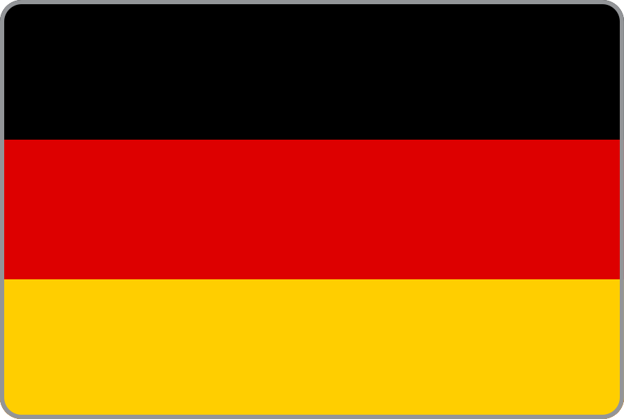
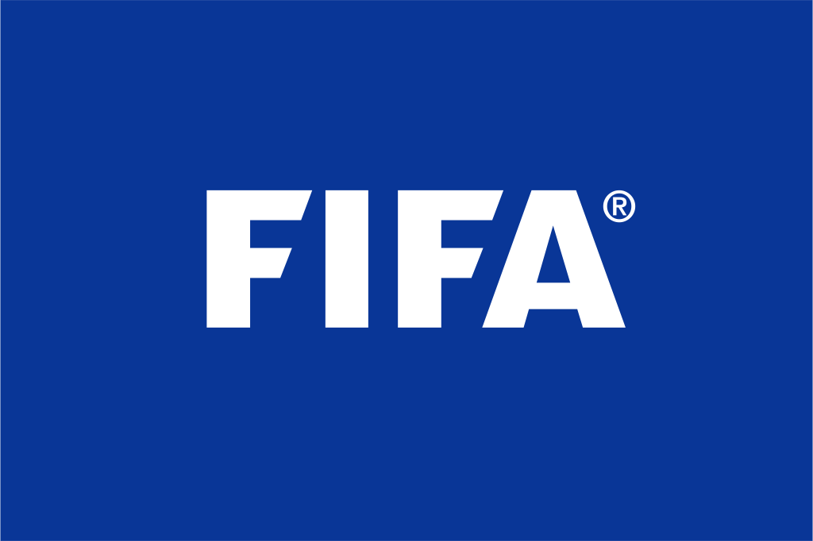
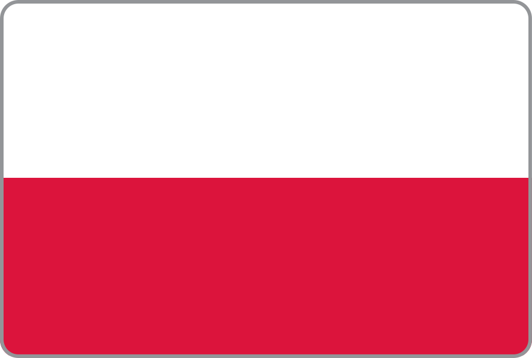
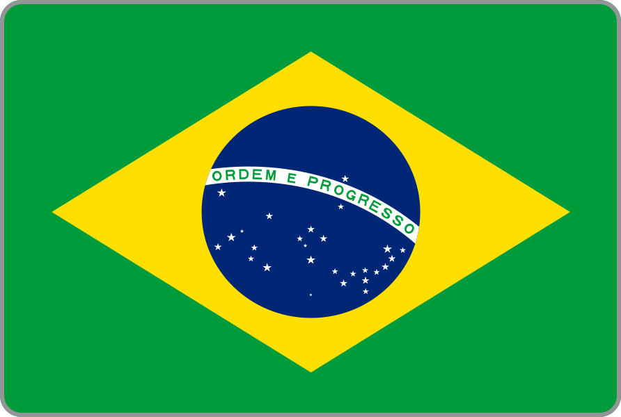
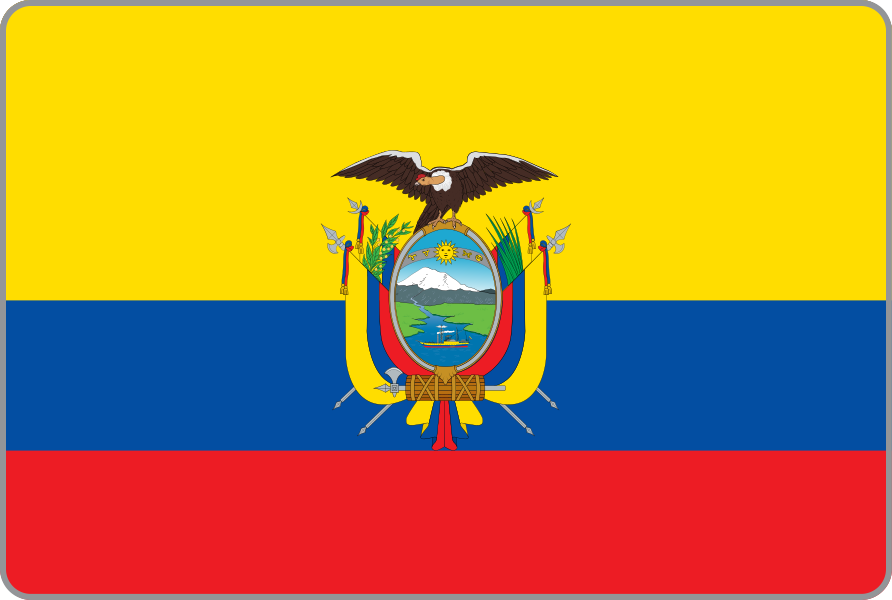

ALEMANHA
- ➱ﾠParticipou de 19 edições da copa do mundo, sendo esta a sua 20º participação.
- ➱ﾠSeleção tetra campeã mundial em 1954, 1974, 1990 e 2014.
- ➱ﾠNome do Técnico: Hans-Dieter Flick
Jogadores:
| GOLEIROS |
| Manuel Neuer |
Mac-André ter Stegen |
Kevin Trapp |
| DEFENSORES |
| Antonio Rüdiger |
Matthias Ginter |
Christian Günter |
| Jonathan Tah |
Robin Koch |
Thilo Kehrer |
| Benjamin Henrichs |
David Raum |
Nico Schlotterbeck |
| MEIO-CAMPISTAS |
| Ilkay Gündogan |
Julian Draxler |
Joshua Kimmich |
| Julian Brandt |
Julian Weigl |
Kai Havertz |
| Florian Neuhaus |
Jamal Musiala |
Anton Stach |
|
Jonas Hofmann |
|
| ATACANTES |
| Thomas Müller |
Timo Werner |
Leroy Sané |
|
Lukas Nmecha |
|
Tabela com os jogos que irá ocorrer:
| 10:00 |
ALEﾠﾠﾠXﾠﾠ
 ﾠJAP ﾠJAP |
| QUA 23/11/2022 - INTERNACIONAL KHALIFA |
| 16:00 |
ESPﾠ ﾠﾠXﾠﾠ
ﾠALE ﾠﾠXﾠﾠ
ﾠALE |
| DOM 27/11/2022 - AL BAYT |
| 16:00 |
?ﾠﾠﾠXﾠﾠ
ﾠALE |
| QUI 01/12/2022 - AL BAYT |
|
 ARÁBIA SAUDITA ARÁBIA SAUDITA
- ➱ﾠParticipou de 5 edições da copa do mundo, sendo esta a sua 6º participação.
- ➱ﾠNenhum título mundial.
- ➱ﾠNome do Técnico: Hervé Renard
Jogadores:
| GOLEIROS |
| Mohammed Al-Owais |
Ameen Al-Bukhari |
Fawaz Al-Qarni |
| DEFENSORES |
| Yaseer Al-Shahrani |
Ahmed Sharahili |
Abdullah Madu |
| Mohammed Al-Burayk |
Hassan Al Tambakti |
Abdulelah Al-Amri |
| Saud Abdulhamid |
Ziyad Al Sahafi |
Moteb Alharbi |
| MEIO-CAMPISTAS |
| Salman Al-Faraj |
Sami Al-Naji |
Mohamed Kanno |
| Abdulaziz Al-Bishi |
Hattan Bahebri |
Abdulrahman Alobud |
| Khalid Al-Ghannam |
|
Ali Al-Hassan |
| ATACANTES |
| Salem Al-Dawsari |
Saleh Khalid Al-Shehri |
Fahad Al Muwallad |
| Abdulrahman Ghareeb |
Feras Al Brikan |
Abdullah Al-Hamddan |
Tabela com os jogos que irá ocorrer:
| 07:00 |
ARGﾠ ﾠﾠXﾠﾠ
ﾠARA ﾠﾠXﾠﾠ
ﾠARA |
| TER 22/11/2022 - NACIONAL DE LUSAIL |
| 10:00 |
POLﾠﾠﾠXﾠﾠ
ﾠARA |
| SÁB 26/11/2022 - CIDADE DA EDUCAÇÃO |
| 16:00 |
ARAﾠﾠﾠXﾠﾠ
 ﾠMEX ﾠMEX |
| QUA 30/11/2022 - NACIONAL DE LUSAIL |
|
ARGENTINA
- ➱ﾠParticipou de 17 edições da copa do mundo, sendo esta a sua 18º participação.
- ➱ﾠSeleção bicampeã mundial em 1978 e 1986.
- ➱ﾠNome do Técnico: Lionel Scaloni
Jogadores:
| GOLEIROS |
| Franco Armani |
Gerónimo Rulli |
Juan Musso |
| DEFENSORES |
| Nicolás Otamendi |
Germán Pezzella |
Nicolás Tagliafico |
| Nahuel Molina |
Hassan Al Tambakti |
Abdulelah Al-Amri |
|
Juan Foyth |
|
| MEIO-CAMPISTAS |
| Ángel Di María |
Manuel Lanzini |
Leandro Paredes |
| Exequiel Palacios |
Alexis Mac Allister |
Luka Romero |
| Matìas Soulè Malvano |
Alejandro Garnacho |
Valentin Carboni |
| ATACANTES |
| Joaquín Correa |
Lionel Messi |
Nicolás González |
| Ángel Correa |
Lucas Boyé |
Julián Álvarez |
Tabela com os jogos que irá ocorrer:
| 07:00 |
ARGﾠﾠﾠXﾠﾠ
ﾠARA |
| TER 22/11/2022 - NACIONAL DE LUSAIL |
| 16:00 |
ARGﾠﾠﾠXﾠﾠ
ﾠMEX |
| SÁB 26/11/2022 - NACIONAL DE LUSAIL |
| 16:00 |
POLﾠﾠﾠXﾠﾠ
ﾠARG |
| QUA 30/11/2022 - (PORTO DE DOHA) |
|
 BÉLGICA BÉLGICA
- ➱ﾠParticipou de 13 edições da copa do mundo, sendo esta a sua 14º participação.
- ➱ﾠNenhum título mundial.
- ➱ﾠNome do Técnico: Roberto Martínez
Jogadores:
| GOLEIROS |
| Simon Mignolet |
Thomas Kaminski |
Davy Roef |
| DEFENSORES |
| Dedryck Boyata |
Thomas Foket |
Jason Denayer |
| Wout Faes |
Siebe van der Heyden |
Sebastiaan Bornauw |
|
Arthur Theate |
|
| MEIO-CAMPISTAS |
| Leander Dendoncker |
Thorgan Hazard |
Adnan Januzaj |
| Youri Tielemans |
Hans Vanaken |
Orel Mangala |
| Albert Sambi Lokonga |
Alexis Saelemaekers |
Yari Verschaeren |
| ATACANTES |
| Christian Benteke |
Michy Batshuayi |
Leandro Trossard |
| Divock Origi |
Dante Vanzeir |
Romelu Lukaku |
Tabela com os jogos que irá ocorrer:
| 16:00 |
BELﾠﾠﾠXﾠﾠ
 ﾠCAN ﾠCAN |
| TER 23/11/2022 - AL RAYYAN |
| 10:00 |
BELﾠﾠﾠXﾠﾠ
 ﾠMAR ﾠMAR |
| DOM 27/11/2022 - AL THUMAMA |
| 12:00 |
CROﾠ ﾠﾠXﾠﾠ
ﾠBEL ﾠﾠXﾠﾠ
ﾠBEL |
| QUI 01/12/2022 - AL RAYYAN |
|
BRASIL
- ➱ﾠParticipou de todas as edições da copa do mundo.
- ➱ﾠSeleção pentacampeã mundial, em 1958, 1962, 1970, 1994 e 2002, sendo a única seleção a ter 5 títulos.
- ➱ﾠNome do Técnico: Adenor Leonardo Bachi (TITE)
Jogadores:
| GOLEIROS |
| Alisson |
Ederson |
Weverton |
| DEFENSORES |
| Marquinhos |
Thiago Silva |
Éder Militão |
| Dani Alves |
Guilherme Arana |
Danilo |
| Alex Telles |
|
Alex Sandro |
| MEIO-CAMPISTAS |
| Philippe Coutinho |
Fred |
Casemiro |
| Lucas Paquetá |
Bruno Guimarães |
Arthur |
| ATACANTES |
| Neymar Jr. |
Richarlison |
Antony |
| Vinícius Júnior |
Rodrygo |
Gabriel Martinelli |
Tabela com os jogos que irá ocorrer:
| 16:00 |
BRAﾠﾠﾠXﾠﾠ
 ﾠSER ﾠSER |
| QUI 24/11/2022 - NACIONAL DE LUSAIL |
| 13:00 |
BRAﾠﾠﾠXﾠﾠ
 ﾠSUI ﾠSUI |
| SEG 28/11/2022 - (PORTO DE DOHA) |
| 16:00 |
CAMﾠ ﾠﾠXﾠﾠ
ﾠBRA ﾠﾠXﾠﾠ
ﾠBRA |
| SEX 02/12/2022 - NACIONAL DE LUSAIL |
|
CAMARÕES
- ➱ﾠParticipou de 7 edições da copa do mundo, sendo esta a sua 8º participação.
- ➱ﾠNenhum título mundial.
- ➱ﾠNome do Técnico: Rigobert Song
Jogadores:
| GOLEIROS |
| Fabrice Ondoa |
Devis Epassy Mboka |
Andre Onana |
| DEFENSORES |
| Ambroise Oyongo |
Jean-Charles Castelletto |
Jerome Onguene |
| Harold Moukoudi |
Collins Faï |
Michael Ngadeu |
| Enzo Ebosse |
Olivier Mbaizo |
Nouhou Tolo |
| MEIO-CAMPISTAS |
| Arnaud Djoum |
André-Frank Zambo Anguissa |
Jeando Fuchs |
| Samuel Oum Gouet |
Nicolas Ngamaleu |
Martin Hongla |
| James Léa Siliki |
Yvan Neyou |
Pierre Kunde Malong |
| ATACANTES |
| Eric Maxim Choupo-Moting |
Vincent Aboubakar |
Stéphane Bahoken |
| Clinton N'Jie |
Karl Toko Ekambi |
Kévin Soni |
Tabela com os jogos que irá ocorrer:
| 07:00 |
SUIﾠﾠﾠXﾠﾠ
ﾠCAM |
| QUI 24/11/2022 - AL JANOUB |
| 07:00 |
CAMﾠﾠﾠXﾠﾠ
ﾠSER |
| SEG 28/11/2022 - AL JANOUB |
| 16:00 |
CAMﾠﾠﾠXﾠﾠ
ﾠBRA |
| SEX 02/12/2022 - NACIONAL DE LUSAIL |
|
CANADÁ
- ➱ﾠParticipou de 1 edição da copa do mundo, sendo esta a sua 2º participação.
- ➱ﾠNenhum título mundial.
- ➱ﾠNome do Técnico: John Herdman
Jogadores:
| GOLEIROS |
| Milan Borjan |
Maxime Crépeau |
Dayne St. Clair |
| DEFENSORES |
| Doneil Henry |
Steven Vitória |
Sam Adekugbe |
| Richie Laryea |
Cristián Gutiérrez |
Derek Cornelius |
| Kamal Miller |
Alistair Johnston |
Scott Kennedy |
| MEIO-CAMPISTAS |
| Atiba Hutchinson |
Jonathan Osorio |
Mark-Anthony Kaye |
| Liam Fraser |
Stephen Eustáquio |
Ismael Koné |
| ATACANTES |
| Tajon Buchanan |
Junior Hoilett |
Lucas Cavallini |
| Cyle Larin |
Ike Ugbo |
Liam Millar |
Tabela com os jogos que irá ocorrer:
| 16:00 |
BELﾠﾠﾠXﾠﾠ
ﾠCAN |
| QUA 23/11/2022 - AL RAYYAN |
| 13:00 |
CROﾠﾠﾠXﾠﾠ
ﾠCAN |
| DOM 27/11/2022 - INTERNACIONAL KHALIFA |
| 12:00 |
CANﾠﾠﾠXﾠﾠ
ﾠMAR |
| QUI 01/12/2022 - AL THUMAMA |
|
 CATAR CATAR
- ➱ﾠSua 1º participação na copa do mundo.
- ➱ﾠNenhum título mundial.
- ➱ﾠNome do Técnico: Félix Sánchez Bas
Jogadores:
| GOLEIROS |
| Saad Al Sheeb |
Yousof Hassan |
Meshaal Barsham |
| DEFENSORES |
| Ró-Ró |
Abdelkarim Hassan |
Salem Al Hajri |
| Bassam Al Rawi |
Tarek Salman |
Musaab Khidir |
|
Homam Ahmed |
|
| MEIO-CAMPISTAS |
| Karim Boudiaf |
Boualem Khoukhi |
Abdullah Al Ahrak |
| Hazem Shehata |
Ismail Mohamad |
Ali Asad |
| Abdelrahman Fahmi Moustafa |
Mohammed Waad |
Naif Al Hadhrami |
| ATACANTES |
| Almoez Ali |
Akram Afif |
Ahmed Alaa |
|
Khalid Muneer Ali |
|
Tabela com os jogos que irá ocorrer:
| 13:00 |
CATﾠﾠﾠXﾠﾠ
ﾠEQU |
| SEG 21/11/2022 - AL BAYT |
| 10:00 |
CATﾠﾠﾠXﾠﾠ
 ﾠSEN ﾠSEN |
| SEX 25/11/2022 - AL THUMAMA |
| 12:00 |
HOLﾠ ﾠﾠXﾠﾠ
ﾠCAT ﾠﾠXﾠﾠ
ﾠCAT |
| TER 29/11/2022 - AL BAYT |
|
 COREIA DO SUL COREIA DO SUL
- ➱ﾠParticipou de 10 edições da copa do mundo, sendo esta a sua 11º participação.
- ➱ﾠNenhum título mundial.
- ➱ﾠNome do Técnico: Paulo Jorge Gomes Bento
Jogadores:
| GOLEIROS |
| Kim Seung-Gyu |
Cho Hyun-Woo |
Kim Dong-Jun |
| DEFENSORES |
| Ji-Su Park |
Kim Tae-Hwan |
Kim Min-Jae |
| Kim Young-Gwon |
Kim Jin-Su |
Kwon Kyung-Won |
| Jonggy Yoon |
Pak Ming-yu |
Jae-Ik Lee |
| MEIO-CAMPISTAS |
| Kim Jin-Kyu |
Lee Jae-Sung |
Nam Tae-Hee |
| Jung Woo-Young |
Kwon Chang-Hoon |
Ko Seung-Beom |
| Seung-Ho Paik |
Woo-Yeong Jeong |
Na Sang-Ho |
| ATACANTES |
| Son Heung-Min |
Hwang Ui-Jo |
Hwang Hee-Chan |
| Young-Wook Cho |
Gyu-Seong Jo |
Song Min-Kyu |
Tabela com os jogos que irá ocorrer:
| 10:00 |
URUﾠ ﾠﾠXﾠﾠ
ﾠCOR ﾠﾠXﾠﾠ
ﾠCOR |
| QUI 24/11/2022 - CIDADE DA EDUCAÇÃO |
| 10:00 |
CORﾠﾠﾠXﾠﾠ
 ﾠGAN ﾠGAN |
| SEG 28/11/2022 - CIDADE DA EDUCAÇÃO |
| 12:00 |
CORﾠﾠﾠXﾠﾠ
 ﾠPOR ﾠPOR |
| SEX 02/12/2022 - CIDADE DA EDUCAÇÃO |
|
CROÁCIA
- ➱ﾠParticipou de 5 edições da copa do mundo, sendo esta a sua 6º participação.
- ➱ﾠNenhum título mundial.
- ➱ﾠNome do Técnico: Zlatko Dalić
Jogadores:
| GOLEIROS |
| Dominik Livakovic |
Ivo Grbic |
Ivica Ivusic |
| DEFENSORES |
| Dejan Lovren |
Domagoj Vida |
Sime Vrsaljko |
| Duje Caleta-Car |
Borna Barisic |
Josip Juranovic |
| Borna Sosa |
Marin Pongracic |
Mile Skoric |
| MEIO-CAMPISTAS |
| Luka Modric |
Ivan Perisic |
Mateo Kovacic |
| Marcelo Brozovic |
Mario Pasalic |
Nikola Vlasic |
| Nikola Moro |
Lovro Majer |
Kristijan Jakic |
| ATACANTES |
| Andrej Kramaric |
Marko Livaja |
Mislav Orsic |
| Ante Budimir |
Josip Brekalo |
|
Tabela com os jogos que irá ocorrer:
| 07:00 |
MARﾠﾠﾠXﾠﾠ
ﾠCRO |
| QUA 23/11/2022 - AL BAYT |
| 13:00 |
CROﾠﾠﾠXﾠﾠ
ﾠCAN |
| DOM 27/11/2022 - INTERNACIONAL KHALIFA |
| 12:00 |
CROﾠﾠﾠXﾠﾠ
ﾠBEL |
| QUI 01/11/2022 - AL RAYYAN |
|
 DINAMARCA DINAMARCA
- ➱ﾠParticipou de 5 edições da copa do mundo, sendo esta a sua 6º participação.
- ➱ﾠNenhum título mundial.
- ➱ﾠNome do Técnico: Kasper Hjulmand
Jogadores:
| GOLEIROS |
| Kasper Schmeichel |
Kasper Schmeichel |
Daniel Iversen |
| DEFENSORES |
| Jannik Vestergaard |
Mads Pedersen |
Andreas Maxso |
| Andreas Christensen |
Joachim Andersen |
Rasmus Kristensen |
| Joakim Maehle |
Victor Nelsson |
Casper Hojer Nielsen |
| MEIO-CAMPISTAS |
| Christian Eriksen |
Thomas Delaney |
Pierre-Emile Hojbjerg |
| Christian Norgaard |
Phillip Biling |
Mathias Jensen |
|
Jesper Lindstrom |
|
| ATACANTES |
| Andreas Cornelius |
Yussuf Poulsen |
Kasper Dolberg |
| Jacob Bruun Larsen |
Andreas Skov Olsen |
Jonas Wind |
Tabela com os jogos que irá ocorrer:
| 10:00 |
DINﾠﾠﾠXﾠﾠ
 ﾠTUN ﾠTUN |
| TER 22/11/2022 - CIDADE DA EDUCAÇÃO |
| 07:00 |
FRAﾠ ﾠﾠXﾠﾠ
ﾠDIN ﾠﾠXﾠﾠ
ﾠDIN |
| SÁB 26/11/2022 - (PORTO DE DOHA) |
| 12:00 |
ﾠﾠﾠXﾠﾠ
ﾠDIN |
| QUA 30/11/2022 - AL JANOUB |
|
ESPANHA
- ➱ﾠParticipou de 15 edições da copa do mundo, sendo esta a sua 16º participação.
- ➱ﾠSeleção campeã mundial em 2010.
- ➱ﾠNome do Técnico: Luis Enrique Martínez García
Jogadores:
| GOLEIROS |
| David Raya |
Unai Simón |
Arnau Tenas |
| DEFENSORES |
| César Azpilicueta |
Jordi Alba |
Eric García |
| Marcos Alonso |
Aymeric Laporte |
Dani Carvajal |
| Pau Torres |
|
Hugo Guillamón |
| MEIO-CAMPISTAS |
| Koke |
Pablo Sarabia |
Marcos Llorente |
| Dani Olmo |
Rodri |
Carlos Soler |
| Pedri |
|
Gavi |
| ATACANTES |
| Yeremi Pino |
Álvaro Morata |
Ferran Torres |
Tabela com os jogos que irá ocorrer:
| 13:00 |
ESPﾠﾠﾠXﾠﾠ
ﾠ |
| QUA 23/11/2022 - AL THUMAMA |
| 16:00 |
ESPﾠﾠﾠXﾠﾠ
ﾠALE |
| DOM 27/11/2022 - AL BAYT |
| 16:00 |
JAPﾠﾠﾠXﾠﾠ
ﾠESP |
| QUI 01/11/2022 - INTERNACIONAL KHALIFA |
|
EQUADOR
- ➱ﾠParticipou de 3 edições da copa do mundo, sendo esta a sua 4º participação.
- ➱ﾠNenhum título mundial.
- ➱ﾠNome do Técnico: Gustavo Julio Alfaro
Jogadores:
| GOLEIROS |
| Jorge Pinos |
Hernan Galindez |
Wellington Ramírez |
| DEFENSORES |
| Luis Fernando León |
Robert Arboleda |
Xavier Arreaga |
| Pervis Estupiñán |
Byron Castillo |
Félix Torres |
| Angelo Preciado |
Diego Palacios |
Piero Hincapié |
| MEIO-CAMPISTAS |
| Danny Cabezas Bazan |
Carlos Gruezo |
Sebastián Méndez |
| Joao Rojas López |
José Cifuentes |
Alan Franco |
| Gonzalo Plata |
Moises Caicedo |
Michael Carcelen |
| ATACANTES |
| Renato Ibarra |
Enner Valencia |
Romario Ibarra |
| Ángel Mena |
Michael Estrada |
Jordy Caicedo |
Tabela com os jogos que irá ocorrer:
| 13:00 |
CATﾠﾠﾠXﾠﾠ
ﾠEQU |
| SEG 21/11/2022 - AL BAYT |
| 13:00 |
HOLﾠﾠﾠXﾠﾠ
ﾠEQU |
| SEX 25/11/2022 - INTERNACIONAL KHALIFA |
| 12:00 |
EQUﾠﾠﾠXﾠﾠ
ﾠSEN |
| TER 29/11/2022 - INTERNACIONAL KHALIFA |
|
 ESTADOS UNIDOS ESTADOS UNIDOS
- ➱ﾠParticipou de 10 edições da copa do mundo, sendo esta a sua 11º participação.
- ➱ﾠNenhum título mundial.
- ➱ﾠNome do Técnico: Gregg Berhalter
Jogadores:
GOLEIRO
|
| Sean Johnson |
Ethan Horvath |
Zack Steffen |
| DEFENSORES |
| Walker Zimmerman |
DeAndre Yedlin |
Erik Palmer-Brown |
| Aaron Long |
Shaq Moore |
Antonee Robinson |
| Miles Robinson |
Reggie Cannon |
George Bello |
| MEIO-CAMPISTAS |
| Kellyn Acosta |
Paul Arriola |
Cristian Roldan |
| Tyler Adams |
Christian Pulisic |
Luca de la Torre |
| James Sands |
Gianluca Busio |
Giovanni Reyna |
| ATACANTES |
| Jordan Morris |
Jordan Pefok |
Jesús Ferreira |
| Timothy Weah |
|
Ricardo Pepi |
Tabela com os jogos que irá ocorrer:
| 16:00 |
EUAﾠﾠﾠXﾠﾠ
ﾠ |
| SEG 21/11/2022 - AL RAYYAN |
| 16:00 |
INGﾠ ﾠﾠXﾠﾠ
ﾠEUA ﾠﾠXﾠﾠ
ﾠEUA |
| SEX 25/11/2022 - AL BAYT |
| 16:00 |
IRAﾠ ﾠﾠXﾠﾠ
ﾠEUA ﾠﾠXﾠﾠ
ﾠEUA |
| TER 29/11/2022 - AL THUMAMA |
|
FRANÇA
- ➱ﾠParticipou de 15 edições da copa do mundo, sendo esta a sua 16º participação.
- ➱ﾠSeleção bicampeã mundial em 1998 e 2018.
- ➱ﾠNome do Técnico: Didier Deschamps
Jogadores:
| GOLEIROS |
| Hugo Lloris |
Alphonse Areola |
Mike Maignan |
| DEFENSORES |
| Raphaël Varane |
Lucas Digne |
Lucas Hernández |
| Presnel Kimpembe |
Jules Koundé |
Jonathan Clauss |
| Theo Hernández |
|
William Saliba |
| MEIO-CAMPISTAS |
| Paul Pogba |
N'Golo Kanté |
Adrien Rabiot |
| Christopher Nkunku |
Matteo Guendouzi |
Aurelien Tchouameni |
| ATACANTES |
| Karim Benzema |
Olivier Giroud |
Antoine Griezmann |
| Wissam Ben Yedder |
Kingsley Coman |
Kylian Mbappé |
Tabela com os jogos que irá ocorrer:
| 16:00 |
FRAﾠﾠﾠXﾠﾠ
ﾠ |
| TER 22/11/2022 - AL JANOUB |
| 13:00 |
FRAﾠﾠﾠXﾠﾠ
ﾠDIN |
| SÁB 26/11/2022 - (PORTO DE DOHA) |
| 12:00 |
TUNﾠﾠﾠXﾠﾠ
ﾠFRA |
| QUA 30/11/2022 - CIDADE DA EDUCAÇÃO |
|
GANA
- ➱ﾠParticipou de edições da copa do mundo, sendo esta a sua º participação.
- ➱ﾠNenhum título mundial.
- ➱ﾠNome do Técnico:
Jogadores:
| GOLEIROS |
| Lawrence Ati |
Joseph Wollacott |
Abdul Manaf Nurudeen |
| DEFENSORES |
| Richard Ofori |
Denis Odoi |
Andy Yiadom |
| Alexander Djiku |
Daniel Amartey |
Joseph Aidoo |
| Abdul Mumin |
Gideon Mensah |
Montari Kamaheni |
| MEIO-CAMPISTAS |
| Thomas Partey |
Elisha Owusu |
Mohammed Kudus |
| Daniel-Kofi Kyereh |
Iddrisu Baba |
Osman Bukari |
| ATACANTES |
| Yaw Yeboah |
Jordan Ayew |
Kwasi Wriedt |
| Joseph Paintsil |
Christopher Antwi-Adjei |
Fatawu Issahaku |
Tabela com os jogos que irá ocorrer:
| 13:00 |
PORﾠﾠﾠXﾠﾠ
ﾠGAN |
| QUI 24/11/2022 - (PORTO DE DOHA) |
| 10:00 |
CORﾠﾠﾠXﾠﾠ
ﾠGAN |
| SEG 28/11/2022 - CIDADE DA EDUCAÇÃO |
| 12:00 |
GANﾠﾠﾠXﾠﾠ
ﾠURU |
| SEX 02/12/2022 - AL JANOUB |
|
HOLANDA
- ➱ﾠParticipou de 10 edições da copa do mundo, sendo esta a sua 11º participação.
- ➱ﾠA Seleção foi três vezes vice-campeã em 1974, 1978 e 2010 e terceiro lugar em 2014.
- ➱ﾠNome do Técnico: Louis van Gaal
Jogadores:
| GOLEIRO |
| Tim Krul |
Mark Flekken |
Joel Drommel |
| DEFESA |
| Daley Blind |
Virgil van Dijk |
Nathan Aké |
| Hans Hateboer |
Denzel Dumfries |
Matthijs de Ligt |
| Jordan Teze |
Owen Wijndal |
Tyrell Malacia |
|
Jurriën Timber |
|
| MEIO CAMPO |
| Georginio Wijnaldum |
Marten de Roon |
Jordy Clasie |
| Davy Klaassen |
Frenkie de Jong |
Guus Til |
|
Teun Koopmeiners |
|
| ATAQUE |
| Steven Berghuis |
Memphis Depay |
Wout Weghorst |
| Steven Bergwijn |
Arnaut Danjuma |
Cody Gakpo |
| Noa Lang |
|
Donyell Malen |
Tabela com os jogos que irá ocorrer:
| 07:00 |
|
SENﾠﾠﾠXﾠﾠ
ﾠHOL |
| SEG 21/11/2022 - AL THUMAMA |
| 13:00 |
|
HOLﾠﾠﾠXﾠﾠ
ﾠEQU |
| SEX 25/11/2022 - INTERNACIONAL KHALIFA |
| 12:00 |
HOLﾠﾠﾠXﾠﾠ
ﾠCAT |
| TER 29/11/2022 - AL BAYT |
|
INGLATERRA
- ➱ﾠParticipou de 15 edições da copa do mundo, sendo esta a sua 16º participação.
- ➱ﾠSeleção campeã mundial em 1966.
- ➱ﾠNome do Técnico: Gareth Southgate
Jogadores:
| GOLEIRO |
| Fraser Forster |
Jordan Pickford |
Nick Pope |
| DEFESA |
| Conor Coady |
Harry Maguire |
John Stones |
| Luke Shaw |
Tyrone Mings |
Kyle Walker-Peters |
| Ben White |
Marc Guehi |
Tyrick Mitchell |
| MEIO CAMPO |
| Jordan Henderson |
James Ward-Prowse |
Mason Mount |
| Declan Rice |
Phil Foden |
Conor Gallagher |
| Emile Smith Rowe |
Jude Bellingham |
Jack Grealish |
|
Bukayo Saka |
|
| ATAQUE |
| Harry Kane |
Raheem Sterling |
Ollie Watkins |
Tabela com os jogos que irá ocorrer:
| 10:00 |
|
INGﾠﾠﾠXﾠﾠ
ﾠIRA |
| SEG 21/11/2022 - INTERNACIONAL KHALIFA |
| 16:00 |
|
INGﾠﾠﾠXﾠﾠ
ﾠEUA |
| SEX 25/11/2022 - AL BAYT |
| 16:00 |
?ﾠﾠﾠXﾠﾠ
ﾠING |
| TER 29/11/2022 - AL RAYYAN |
|
IRÃ
- ➱ﾠParticipou de 5 edições da copa do mundo, sendo esta a sua 6º participação.
- ➱ﾠNenhum título mundial.
- ➱ﾠNome do Técnico: Dragan Skočić
Jogadores:
| GOLEIRO |
| Hossein Hosseini |
Alireza Beiranvand |
Amir Abedzadeh |
| DEFESA |
| Shojae Khalilzadeh |
Majid Hosseini |
Sadegh Moharrami |
| Morteza Pouraliganji |
Milad Mohammadi |
Daniel Esmaeilifar |
| Hossein Kanani |
Omid Norafkan |
Aref Gholami |
|
Farshad Faraji |
|
| MEIO CAMPO |
| Alireza Jahanbakhsh |
Saeid Ezatolahi |
Ali Gholizadeh |
| Ehsan Hajsafi |
Mehdi Mehdipour |
Vahid Amiri |
| Mehdi Torabi |
Kamal Kamyabinia |
Ahmad Nourollahi |
|
Milad Sarlak |
|
| ATAQUE |
| Sardar Azmoun |
Karim Ansarifard |
Mehdi Taremi |
| Allahyar Sayyad |
|
Amirhossein Hosseinzadeh |
Tabela com os jogos que irá ocorrer:
| 10:00 |
|
INGﾠﾠﾠXﾠﾠ
ﾠIRA |
| SEG 21/11/2022 - INTERNACIONAL KHALIFA |
| 07:00 |
|
?ﾠﾠﾠXﾠﾠ
ﾠIRA |
| SEX 25/11/2022 - AL THUMAMA |
| 16:00 |
IRAﾠﾠﾠXﾠﾠ
ﾠEUA |
| TER 29/11/2022 - Al RAYYAN |
|
JAPÃO
- ➱ﾠParticipou de 6 edições da copa do mundo, sendo esta a sua 7º participação.
- ➱ﾠNenhum título mundial.
- ➱ﾠNome do Técnico: Hajime Moriyasu
Jogadores:
| GOLEIRO |
| Eiji Kawashima |
Shuichi Gonda |
Daniel Schmidt |
|
Kosei Tani |
|
| DEFESA |
| Maya Yoshida |
Yuto Nagatomo |
Naomichi Ueda |
| Sho Sasaki |
Shogo Taniguchi |
Shinnosuke Nakatani |
| Yuta Nakayama |
|
Miki Yamane |
| MEIO CAMPO |
| Gaku Shibasaki |
Genki Haraguchi |
Ao Tanaka |
| Takefusa Kubo |
Hidemasa Morita |
Reo Hatate |
| ATAQUE |
| Takumi Minamino |
Takuma Asano |
Junya Ito |
| Ayase Ueda |
Kaoru Mitoma |
Daichi Hayashi |
Tabela com os jogos que irá ocorrer:
| 10:00 |
|
ALEﾠﾠﾠXﾠﾠ
ﾠJAP |
| QUA 23/11/2022 - INTERNACIONAL KHALIFA |
| 07:00 |
JAPﾠﾠﾠXﾠﾠ
 ﾠ? ﾠ? |
| DOM 27/11/2022 - AL RAYYAN |
| 16:00 |
JAPﾠﾠﾠXﾠﾠ
ﾠESP |
| QUI 01/12/2022 - INTERNACIONAL KHALIFA |
|
MARROCOS
- ➱ﾠParticipou de 5 edições da copa do mundo, sendo esta a sua 6º participação.
- ➱ﾠNenhum título mundial.
- ➱ﾠNome do Técnico: Vahid Halilhodžić
Jogadores:
| GOLEIRO |
| Bono |
Ahmed Tagnaouti |
Munir |
|
El Mehdi Benabid |
|
| DEFESA |
| Adam Masina |
Samy Mmaee |
Sofian Chakla |
| Jawad El Yamiq |
Sofiane Alakouch |
Achraf Hakimi |
| Nayef Aguerd |
Yahia Attiyat Allah |
Souffian El Karouani |
| Mohamed Chibi |
|
Badr Banoun |
| MEIO CAMPO |
| Faycal Fajr |
Romain Saïss |
Sofiane Boufal |
| Sofyan Amrabat |
Selim Amallah |
Ilias Chair |
| Yahya Jabrane |
Imran Louza |
Azz-Eddine Ounahi |
|
Aymen Barkok |
|
| ATAQUE |
| Munir El Haddadi |
Tarik Tissoudali |
Ryan Mmaee |
| Youssef En-Nesyri |
Ayoub El Kaabi |
Abde Ezzalzouli |
| Zakaria Aboukhlal |
|
Soufiane Rahimi |
Tabela com os jogos que irá ocorrer:
| 07:00 |
|
MARﾠﾠﾠXﾠﾠ
ﾠCRO |
| QUA 23/11/2022 - AL BAYT |
| 10:00 |
|
BELﾠﾠﾠXﾠﾠ
ﾠMAR |
| DOM 27/11/2022 - Al THUMAMA |
| 12:00 |
CANﾠﾠﾠXﾠﾠ
ﾠMAR |
| QUI 01/12/2022 - Al THUMAMA |
|
MÉXICO
- ➱ﾠParticipou de 16 edições da copa do mundo, sendo esta a sua 17º participação.
- ➱ﾠNenhum título mundial.
- ➱ﾠNome do Técnico: Gerardo Martino
Jogadores:
| GOLEIRO |
| Alfredo Talavera |
Rodolfo Cota |
Guillermo Ochoa |
|
Carlos Acevedo |
|
| DEFESA |
| Héctor Moreno |
Néstor Araujo |
Jorge Sánchez |
| César Montes |
Jesús Alberto Angulo |
Gerardo Arteaga |
| Johan Vásquez |
Julian Araujo |
Israel Reyes |
| MEIO CAMPO |
| Luís Romo |
Jesús Gallardo |
Héctor Herrera |
| Érick Gutiérrez |
Érick Aguirre |
Carlos Rodríguez |
| Edson Álvarez |
Diego Lainez |
Jesús Corona |
| ATAQUE |
| Roberto Alvarado |
Henry Martín |
Raúl Jiménez |
| Hirving Lozano |
Alexis Vega |
Uriel Antuna |
|
Santiago Giménez |
|
Tabela com os jogos que irá ocorrer:
| 13:00 |
|
MEXﾠﾠﾠXﾠﾠ
ﾠPOL |
| TER 22/11/2022 - 974 (PORTO DE DOHA) |
| 16:00 |
|
ARGﾠﾠﾠXﾠﾠ
ﾠMEX |
| SAB 26/11/2022 - NACIONAL DE LUSAIL |
| 16:00 |
ARAﾠﾠﾠXﾠﾠ
ﾠMEX |
| QUA 30/11/2022 - NACIONAL DE LUSAIL |
|
POLÔNIA
- ➱ﾠParticipou de 8 edições da copa do mundo, sendo esta a sua 9º participação.
- ➱ﾠA Seleção ficou duas vezes no terceiro lugar em 1974 e 1982
- ➱ﾠNome do Técnico: Czesław Michniewicz
Jogadores:
| GOLEIRO |
| Wojciech Szczesny |
Lukasz Skorupski |
Bartlomiej Dragowski |
|
Kamil Grabara |
|
| DEFESA |
| Kamil Glik |
Marcin Kaminski |
Bartosz Bereszynski |
| Tomasz Kedziora |
Mateusz Wieteska |
Jan Bednarek |
| Michal Helik |
Tymoteusz Puchacz |
Krystian Bielik |
|
Matthew Cash |
|
| MEIO CAMPO |
| Grzegorz Krychowiak |
Kamil Grosicki |
Piotr Zielinski |
| Przemyslaw Frankowski |
Jacek Góralski |
Sebastian Szymanski |
| Konrad Michalak |
Patryk Kun |
Szymon Zurkowski |
| Arkadiusz Reca |
Jakub Moder |
Jakub Moder |
| ATAQUE |
| Robert Lewandowski |
Krzysztof Piatek |
Adam Buksa |
Tabela com os jogos que irá ocorrer:
| 13:00 |
|
MEXﾠﾠﾠXﾠﾠ
ﾠPOL |
| TER 22/11/2022 - 974 (PORTO DE DOHA) |
| 10:00 |
|
POLﾠﾠﾠXﾠﾠ
ﾠARA |
| SAB 26/11/2022 - CIDADE DA EDUCAÇÃO |
| 16:00 |
POLﾠﾠﾠXﾠﾠ
ﾠARG |
| QUA 30/11/2022 - 974 (PORTO DE DOHA) |
|
PORTUGAL
- ➱ﾠParticipou de 7 edições da copa do mundo, sendo esta a sua 8º participação.
- ➱ﾠTerceiro lugar em 1966
- ➱ﾠNome do Técnico: Fernando Santos
Jogadores:
| GOLEIRO |
| Rui Patrício |
José Sá |
Diogo Costa |
| DEFESA |
| Pepe |
José Fonte |
Cédric Soares |
| Raphaël Guerreiro |
João Cancelo |
Diogo Dalot |
| Tiago Djaló |
Nuno Mendes |
Gonçalo Inacio |
| MEIO CAMPO |
| João Moutinho |
Danilo Pereira |
Bruno Fernandes |
| William Carvalho |
Otávio |
Bernardo Silva |
| Diogo Jota |
Vitinha |
Matheus Nunes |
| ATAQUE |
| André Silva |
Cristiano Ronaldo |
Goncalo Guedes |
| Rafael Leão |
|
João Félix |
Tabela com os jogos que irá ocorrer:
| 13:00 |
|
PORﾠﾠﾠXﾠﾠ
ﾠGAN |
| QUI 24/11/2022 - 974 (PORTO DE DOHA) |
| 16:00 |
|
PORﾠﾠﾠXﾠﾠ
ﾠURU |
| SEG 28/11/2022 - NACIONAL DE LUSAIL |
| 12:00 |
CORﾠﾠﾠXﾠﾠ
ﾠPOR |
| SEX 02/12/2022 - CIDADE DA EDUCAÇÃO |
|
SENEGAL
- ➱ﾠParticipou de 2 edições da copa do mundo, sendo esta a sua 3º participação.
- ➱ﾠNenhum título mundial.
- ➱ﾠNome do Técnico: Aliou Cissé.
Jogadores:
| GOLEIRO |
| Bingourou Kamara |
Timothy Dieng |
Édouard Mendy |
| Alfred Gomis |
|
Alioune Badara Faty |
| DEFESA |
| Youssouf Sabaly |
Saliou Ciss |
Kalidou Koulibaly |
| Pape Abou Cissé |
Fodé Ballo-Toure |
Abdoulaye Seck |
| Bouna Sarr |
Ibrahima Mbaye |
Abdou Diallo |
| MEIO CAMPO |
| Idrissa Gueye |
Nampalys Mendy |
Cheikhou Kouyaté |
| Joseph Lopy |
Pape Sarr |
Moustapha Name |
| Mamadou Loum |
|
Pape Gueye |
| ATAQUE |
| Keita Baldé |
Boulaye Dia |
Sadio Mané |
| Habib Diallo |
Bamba Dieng |
Ismaïla Sarr |
| Famara Diedhiou |
|
Mame Thiam |
Tabela com os jogos que irá ocorrer:
| 07:00 |
|
SENﾠﾠﾠXﾠﾠ
ﾠHOL |
| SEG 21/11/2022 - AL THUMAMA |
| 10:00 |
|
CATﾠﾠﾠXﾠﾠ
ﾠSEN |
| SEX 25/11/2022 - AL THUMAMA |
| 12:00 |
EQUﾠﾠﾠXﾠﾠ
ﾠSEN |
| TER 29/11/2022 - INTERNACIONAL KHALIFA |
|
SÉRVIA
- ➱ﾠParticipou de 2 edições da copa do mundo, sendo esta a sua 3º participação.
- ➱ﾠNenhum título mundial.
- ➱ﾠNome do Técnico: Dragan Stojković.
Jogadores:
| GOLEIRO |
| Predrag Rajkovic |
Marko Dmitrovic |
Vanja Milinkovic |
| DEFESA |
| Strahinja Pavlovic |
Filip Mladenovic |
Nikola Milenkovic |
| Matija Nastasic |
Milos Veljkovic |
Stefan Mitrovic |
|
Aleksa Terzic |
|
| MEIO CAMPO |
| Nemanja Radonjic |
Nemanja Gudelj |
Dusan Tadic |
| Andrija Zivkovic |
Sasa Lukic |
Filip Kostic |
| Marko Grujic |
Mihailo Ristic |
Sergej Milinkovic-Savic |
|
Uros Racic |
|
| ATAQUE |
| Dusan Vlahovic |
Aleksandar Mitrovic |
Luka Jovic |
Tabela com os jogos que irá ocorrer:
| 16:00 |
|
BRAﾠﾠﾠXﾠﾠ
ﾠSER |
| QUI 24/11/2022 - NACIONAL DE LUSAIL |
| 07:00 |
|
CAMﾠﾠﾠXﾠﾠ
ﾠSER |
| SEG 28/11/2022 - AL JANOUB |
| 16:00 |
SERﾠﾠﾠXﾠﾠ
ﾠSUI |
| SEX 02/12/2022 - 974 (PORTO DE DOHA)
|
|
SUÍÇA
- ➱ﾠParticipou de 11 edições da copa do mundo, sendo esta a sua 12º participação.
- ➱ﾠNenhum título mundial.
- ➱ﾠNome do Técnico: Murat Yakin.
Jogadores:
| GOLEIRO |
| David Von Ballmoos |
Jonas Omlin |
Gregor Kobel |
| DEFESA |
| Ricardo Rodríguez |
Silvan Widmer |
Kevin Mbabu |
| Nico Elvedi |
Manuel Akanji |
Eray Cömert |
|
Jordan Lotomba |
|
| MEIO CAMPO |
| Fabian Frei |
Steven Zuber |
Xherdan Shaqiri |
| Granit Xhaka |
Remo Freuler |
Renato Steffen |
| Djibril Sow |
Michel Aebischer |
Ruben Vargas |
|
Noah Okafor |
|
| ATAQUE |
| Mario Gavranovic |
Breel Embolo |
Andi Zeqiri |
Tabela com os jogos que irá ocorrer:
| 07:00 |
|
SUIﾠﾠﾠXﾠﾠ
ﾠCAM |
| QUI 24/11/2022 - AL JANOUB |
| 13:00 |
|
BRAﾠﾠﾠXﾠﾠ
ﾠSUI |
| SEG 28/11/2022 - 974 (PORTO DE DOHA) |
| 16:00 |
SERﾠﾠﾠXﾠﾠ
ﾠSUI |
| SEX 02/12/2022 - 974 (PORTO DE DOHA)
|
|
TUNÍSIA
- ➱ﾠParticipou de 5 edições da copa do mundo, sendo esta a sua 6º participação.
- ➱ﾠNenhum título mundial.
- ➱ﾠNome do Técnico: Jalel Kadri.
Jogadores:
| GOLEIRO |
| Mouez Hassen |
Ali Ejjemel |
Aymen Dahmen |
| Bechir Ben Said |
|
Farouk Ben Mustapha |
| DEFESA |
| Mohamed Drager |
Hamza Mathlouthi |
Ali Maâloul |
| Oussama Haddadi |
Bilel Ifa |
Montassar Talbi |
| Dylan Bronn |
|
Amine Ben Hamida |
| MEIO CAMPO |
| Abdi Ali |
Naïm Sliti |
Ferjani Sassi |
| Nader Ghandri |
Ellyes Skhiri |
Aissa Laidouni |
| Ghaliene Chaaleli |
Mortadha Ben Ouanes |
Mohamed Ali Ben Romdhane |
| Hannibal Mejbri |
Anis Ben Slimane |
Omar Rekik |
| Saif-Eddine Khaoui |
|
Hamza Rafia |
| ATAQUE |
| Youssef M'Sakni |
Taha Yassine Khenissi |
Saad Bguir |
| Seifeddine Jaziri |
Issam Jebali |
Yoann Touzgha |
|
Wahbi Khaz |
|
Tabela com os jogos que irá ocorrer:
| 10:00 |
|
DINﾠﾠﾠXﾠﾠ
ﾠTUN |
| TER 22/11/2022 - CIDADE DA EDUCAÇÃO |
| 07:00 |
|
TUNﾠﾠﾠXﾠﾠ
ﾠ? |
| SAB 26/11/2022 - AL JANOUB |
| 12:00 |
TUNﾠﾠﾠXﾠﾠ
ﾠFRA |
| QUA 30/11/2022 - CIDADE DA EDUCAÇÃO
|
|
URUGUAI
- ➱ﾠParticipou de 13 edições da copa do mundo, sendo esta a sua 14º participação.
- ➱ﾠSeleção bicampeã mundial em 1930 e 1950.
- ➱ﾠNome do Técnico: Diego Alonso.
Jogadores:
| GOLEIRO |
| Fernando Muslera |
Sebastián Sosa |
Guillermo De Amores |
|
Sergio Rochet |
|
| DEFESA |
| Martín Cáceres |
Diego Godín |
Damián Suárezl |
| Leandro Cabrera |
Sebastián Coates |
José Giménez |
| Mathías Olivera |
Matías Viña |
Ronald Araújo |
| MEIO CAMPO |
| Facundo Torres |
Giorgian de Arrascaeta |
Lucas Torreira |
| Rodrigo Bentancur |
Federico Valverde |
Manuel Ugarte |
| Nicolás De La Cruz |
Facundo Pellistri |
Fabricio Díaz |
| ATAQUE |
| Maxi Gómez |
Edinson Cavani |
Luis Suárez |
| Diego Rossi |
|
Darwin Núñez |
>
Tabela com os jogos que irá ocorrer:
| 10:00 |
|
URUﾠﾠﾠXﾠﾠ
ﾠCOR |
| QUI 24/11/2022 - CIDADE DA EDUCAÇÃO |
| 16:00 |
|
PORﾠﾠﾠXﾠﾠ
ﾠURU |
| SEG 28/11/2022 - NACIONAL DE LUSAIL |
| 12:00 |
GANﾠﾠﾠXﾠﾠ
ﾠURU |
| SEX 02/12/2022 - AL JANOUB
|
|
|
REPESCAGEM
|